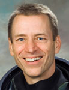

Lyndon B. Johnson Space Center
Houston, Texas 77058
|
National Aeronautics and Space Administration Lyndon B. Johnson Space Center Houston, Texas 77058 |
 |
Biographical Data |
||
Gregory C. Johnson (Captain, U.S. Navy, Ret.)
NASA Astronaut
PERSONAL DATA: Born in Seattle, Washington. Married to Nanette Faget. Greg has two grown sons, Scott and Kent. Nanette has three children. Recreational interests include, cycling and swimming. His father, Raleigh O. Johnson and his wife, Patsy, reside in Mukilteo, Washington. His mother, Mary Ann Johnson, is deceased.
EDUCATION: Graduated from West Seattle High School, Seattle, Washington, 1972; Bachelor of Science degree in Aerospace Engineering, University of Washington, 1977; U.S. Air Force Test Pilot School, Edwards Air Force Base, California, 1984.
ORGANIZATIONS: Association Space Explorers, Society of Experimental Test Pilots; American Institute of Aeronautics and Astronautics; Tau Beta Pi Honorary Engineering Society; Naval Reserve Association, Tailhook Association.
SPECIAL HONORS: NASA James A. Korkowski Excellence in Achievement Award; VA-128 Attack Pilot of the Year; Carrier Airwing Fifteen Top Ten Tailhook Pilot; Carrier Airwing Fourteen Top Ten Tailhook Pilot; Navy Meritorious Service Medals (three); Navy and Marine Corps Commendation Medals (three); Navy and Marine Corps Achievement Medal; Armed Forces Expeditionary Medal; Humanitarian Service Medal and numerous other U.S. Navy decorations.
EXPERIENCE: Johnson received his commission through the Naval Aviation Officer Candidate Program at Naval Air Station Pensacola, Florida in September 1977. He received his Naval Aviator wings in December 1978 and following training was designated an instructor pilot in TA-4J aircraft. In 1980, he transitioned to A-6E aircraft completing two deployments in the Western Pacific and Indian Oceans. In 1984, he reported to the U.S. Air Force Test Pilot School at Edwards Air Force Base, California. After graduation he reported to the Naval Weapons Center, China Lake, California, performing flight tests in A-6E and F/A-18A aircraft. Following his flight test tour, he reported to Naval Air Station Whidbey Island Washington as the maintenance department head in an operational A-6 squadron. During this tour, he completed another Western Pacific and Indian Ocean deployment as well as a Northern Pacific deployment. He resigned his commission in 1990 and accepted a position at the NASA’s Johnson Space Center Aircraft Operations division, in Houston, Texas. From 1990 to 2007, Johnson served as a Captain in the U.S. Navy, reserve component, and was the Commanding Officer of four Naval Reserve units. He served as a Senior Research Officer in the Office of Naval Research 113, a science and technology unit based at the Navy Postgraduate School in Monterey, California. He has logged more than 10,800 flying hours in 50 aircraft and over 500 carrier landings.
NASA EXPERIENCE: In April 1990, Johnson was accepted as an Aerospace Engineer and research pilot at the NASA’s Johnson Space Center Aircraft Operations division, Ellington Field, Texas. He qualified as a T-38 instructor, functional check flight and examiner pilot, as well as Gulfstream I aircraft commander, WB-57 high altitude research pilot and KC-135 co-pilot. Additionally, he conducted flight test programs in the T-38 aircraft including JET-A airstart testing, T-38N avionics upgrade testing and the first flight of the T-38 inlet redesign aircraft. In 1994, he assumed duties as the Chief, Maintenance & Engineering branch responsible for all modifications on Johnson’s 44 aircraft.
Selected by NASA as an astronaut in June 1998, he reported for training in August 1998. Johnson was the class leader for the 17th group of astronauts comprised of 31 U.S. and international members. Astronaut Candidate Training included orientation briefings, tours, numerous scientific and technical briefings, intensive instruction in shuttle and International Space Station systems, and physiological training and ground school to prepare for T-38 flight training. Johnson was initially assigned as an Astronaut Support Personnel (ASP) responsible for configuring the orbiter switches prior to launch and strapping astronauts in their seats for launch. He then served as the Astronaut Office representative for all technical aspects of orbiter landing and roll out issues.
From June 2004 to November 2005, Johnson served as manager, Launch Integration, for the Space Shuttle Program (SSP) at NASA’s Kennedy Space Center, Florida and served as the Chairman of the SSP Daily Program Requirements Board. He also served as the Astronaut Office Deputy, Space Shuttle Program branch and Return to Flight Representative. Johnson served as the pilot the final space shuttle mission to the Hubble Space Telescope. The mission successfully extended and improved the observatory’s capabilities through 2014. In completing STS-125, he logged nearly 13 days in space. Johnson is currently a management astronaut assigned as the Deputy, Aircraft Operations division which manages 26 aircraft of five different types. He is a qualified T-38 instructor pilot, T-38 examiner pilot, T-38 functional check flight pilot, WB-57F high altitude research pilot and KC-97 Super Guppy aircraft commander pilot.
SPACE FLIGHT EXPERIENCE: STS-125 Atlantis (May 11 through May 24, 2009) was the fifth and final Hubble servicing mission. The 19-year-old telescope spent six days in the shuttle’s cargo bay undergoing an overhaul conducted by four spacewalkers over five daily spacewalks, with the assistance of crewmates inside the Atlantis. The spacewalkers overcame frozen bolts, stripped screws, and stuck handrails. The refurbished Hubble Telescope then had four new or rejuvenated scientific instruments, new batteries, new gyroscopes, and a new computer. The STS-125 mission was accomplished in 12 days, 21 hours, 37 minutes and 09 seconds, traveling 5,276,000 miles in 197 Earth orbits.
JUNE 2014